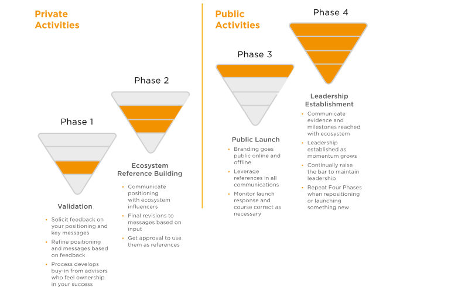
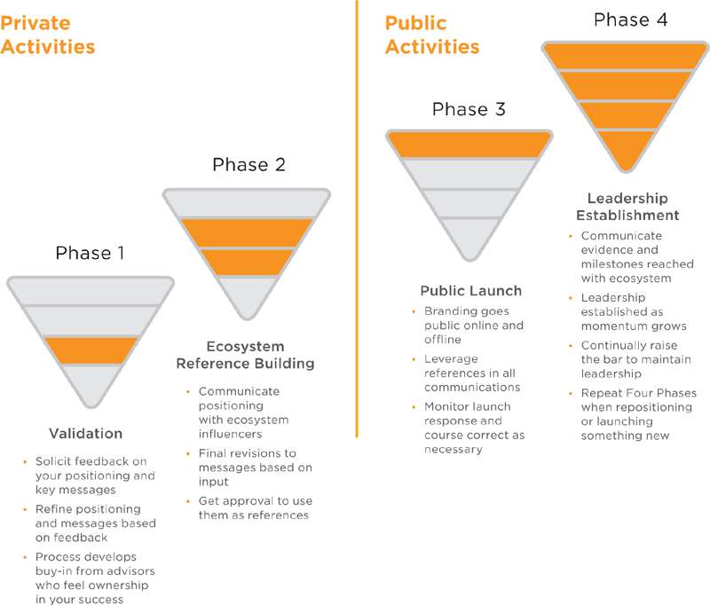
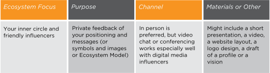
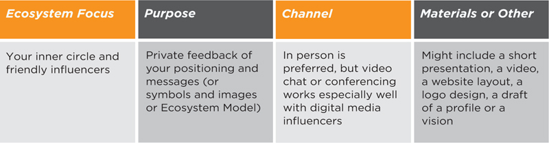
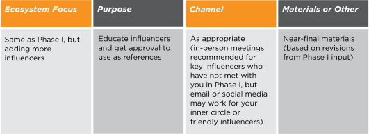
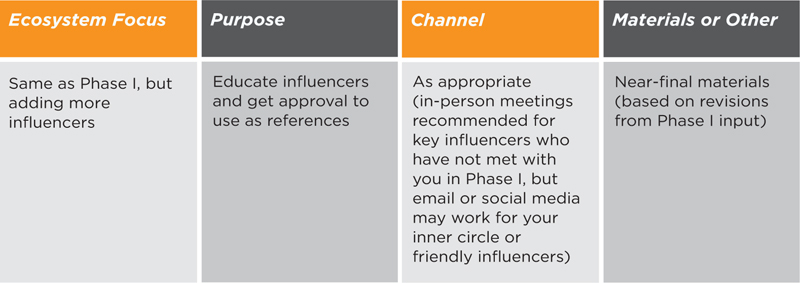
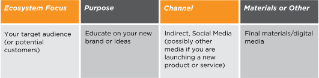
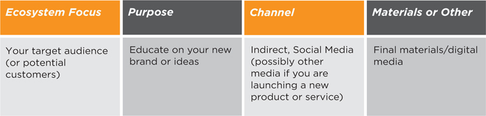
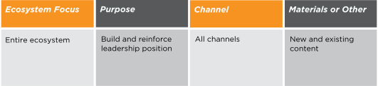
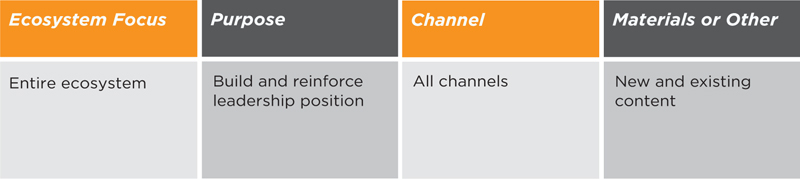

The Four Phases of Brand Communication model (Figure 6.7) will help you to develop a brand communication plan that engages different parts of the ecosystem depending on the phase. This brand communication model has been proven successful with both product and company launches throughout my career in Silicon Valley. It works equally well when you are reinventing (or launching) your personal brand.
The Regis McKenna Inc. team that handled Apple product launches introduced me to a version of the Four Phases model. If you wonder how companies successfully get key influencers to say good things about their products when they launch, pay attention to this model. Think of yourself as a product to be launched. You need to 1) validate your “product” concept, 2) build a reference or partner structure, 3) have influencers give their endorsements publicly when you launch and 4) communicate evidence of your momentum and success.
The first two phases are done in private to ensure that your value messages are compelling to your target audience, and to build the reference structure that you’ll need to be credible with your brand communications.
The second two phases are the public phases, and apply to when your brand is made public, when references publicly support you and when you continue to build your leadership position with additional announcements and evidence.
Different parts of the ecosystem are more important at different phases of communication. Note that early on, you need to concentrate on those influencers who are closer to you in terms of their stakeholder relationship. In Phase 4, others may try to copy your leadership claims, so you will need to continue to raise the bar of leadership through new ideas, thought leadership, achievements and other evidence that show your momentum. If you are repositioning, introducing a new initiative or launching something new, you will need to repeat these four phases.
Figure 6.7
Let’s examine what goes into the Four Phases. The colored layers conceptually indicate the ecosystem focus of each phase. As we mentioned, the model is divided in half, with Private Activities on the left and Public Activities on the right.
 
Figure 6.8
Private Activities
Phase 1: Validation
 
The validation phase provides an excellent opportunity to see if your category and value proposition resonates with people, and if your messaging is compelling. With Hillary Freeman, the City Council candidate, we used early meetings to refine her messages and build support for her candidacy. Sometimes during this process, your early influencers will not agree with your ideas and messages. Although you will ultimately make the call on what you communicate, be sure to be open to change—especially if the feedback is consistently negative.
The validation meetings should be done one-on-one for optimized two-way idea exchange. You’ll recognize the type of response instantly if people are nodding their heads and agreeing, or if they frown and looked confused. You need to probe to understand their concerns and ask their advice. By helping you, they are investing in you and your ideas. If you incorporate their suggestions (provided that they have sound advice), and update them, they will want to root for your success.
Figure 6.9a
Phase 2: Ecosystem Reference Building
 
During Phase 2, you’ll go back to your friendly influencers to update them on your latest strategy, messages and images. You will also expand your briefings to other influencers and solicit them as references or for testimonials.
It is flattering to know that you have helped people create a better “product” because of your input. Your first instinct is generally to redouble efforts to help them be successful, because you’ve invested some of yourself in the endeavor—even if it is only by offering some friendly advice.
When I was in advertising and market consulting, we used to joke that engineering just wanted to throw their products over the wall and advertise them without any understanding of customer need or any market conditioning. Phases 1 and 2 (the private phases) are about doing the groundwork to align with customer needs. Conditioning the market by seeding references is key to credibility.
Let’s say that you want to reinvent your personal brand from being a banking executive to a consultant helping social entrepreneurs. If your messaging is that business and banking experience can help social enterprises, then you would want 1) references from banking that validated your expertise and ability to help social entrepreneurs and 2) social entrepreneurs who say how financial understanding and connections are what they need.
Phase 2 is about seeding the “market” to ensure acceptance of your new brand or ideas. You are building a reference structure so when your brand goes public, a key set of influencers will endorse your new brand.
Figure 6.9b
Phase 3: Public Launch
 
With your new personal brand, you might be launching a website, a blog or a thought leadership program, putting up a new LinkedIn profile or applying for a new job. The “launch” will not be a one-day event, but rather a shortened time frame when you get a critical mass of attention. It might involve a coordinated social media program with guest blogs, podcasts, an introductory video, a campaign to build Twitter followers and Facebook friends, and proliferation of your content and good ideas. If you aren’t adept at social media, at least email all your contacts with links and a short blurb that paraphrases your new profile copy for, say, LinkedIn. Let people know how they can engage with you and, if appropriate, help you.
You can help get your endorsers to be your references by adding their quotes—for instance, statements agreeing with your vision—to your blog posts or guest blogs. If you are going to be interviewed on a podcast or other media, you can supply the interviewer with a few of your pre-briefed contacts. I always have quotes from clients on my website, in addition to my recommendations on LinkedIn. In this way, I can facilitate the ecosystem reference-checking and build credibility faster for my brand.
The key to a successful launch is to condition the market to accept your new brand by lining up key influencers as references before the public launch. Remember, promoting new products or your personal brand only causes the market to seek assurance from the ecosystem. Lining up key endorsements in advance will speed establishment of your desired brand.
Figure 6.10
Phase 4: Leadership Establishment
 
If you have been successful in your public launch, then a broader audience is aware of your brand and has been influenced to think about it in a positive light. Your influencers have been vocal and supportive. People have begun talking about you offline and online, accurately reflecting your brand positioning. You have been contacted about new opportunities for jobs, partnerships, business, funding, publicity or speaking.
Now what? Resist the urge to rest on your laurels. Positioning is a dynamic process. Although you may be seen as a leader of your chosen category today, tomorrow a competitor may knock you off your perch or the market may shift and no longer need your unique talents. You need to innovate continually and raise the standard for providing value.
When I relaunched my brand as BrandingPays (formerly Karen Kang Consulting) in January 2010, I followed my own methodology by testing messages and lining up references in advance. My newsletter announced the change of name and brand identity, but assured everyone that the quality and methodology remained unchanged. My website was completely redesigned to be more personable and interactive. My blog started focusing more on personal branding. I gave a series of public and private presentations with the new brand identity, and people in my seminars started referring me to other groups. Within 18 months of launching, I had more than 20 invitations to speak on personal branding, from the London Business School to Genentech, from Vistage International to national conventions. The buzz began with my brand launch, but I had to deliver on my brand promise to keep the word-of-mouth momentum going. The truth is that once you lay claim to a leadership position, you need to deliver the evidence. That’s why Phase 4 is about continuing the momentum, evidence delivery and innovation.